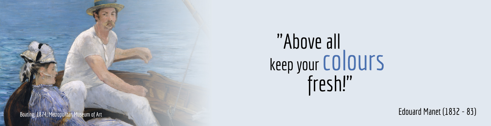

About Me
I was born and raised in Lima, Peru. I grew up playing soccer like any other good latina. In High School, I was introduced to Graphic Design through a University Fair I went to. I studied Graphic Design at Instituto San Ignacio de Loyola for about 3 years. The opportunity came to go to United States to broaden my knowledge of Arts. I ended up learning that I am also interested in Computer Science and Art Education. I worked as a Graphic Designer for 3 years while getting my degree at Brigham Young University in Art Education. I'm fascinated by art, technology, and other cultures. I was a volunteer and went to serve and teach the great people in Nevada and Arizona for 18 months. I realized then how much I enjoy being around people. Serving them and sharing with them what I've learned in my life, taught me that the greatest joy come from our relationship with others.
Download PDFs